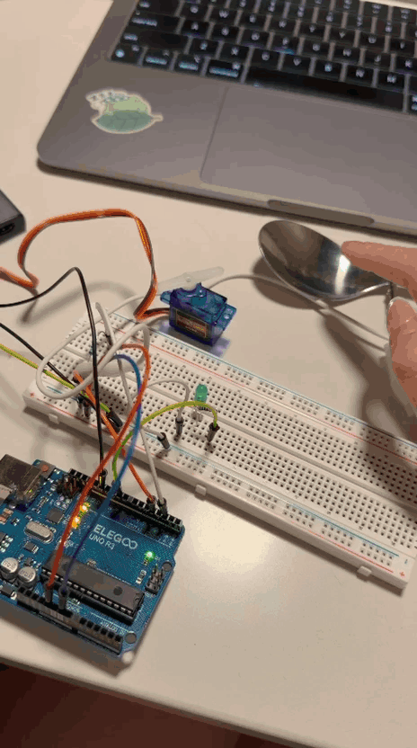
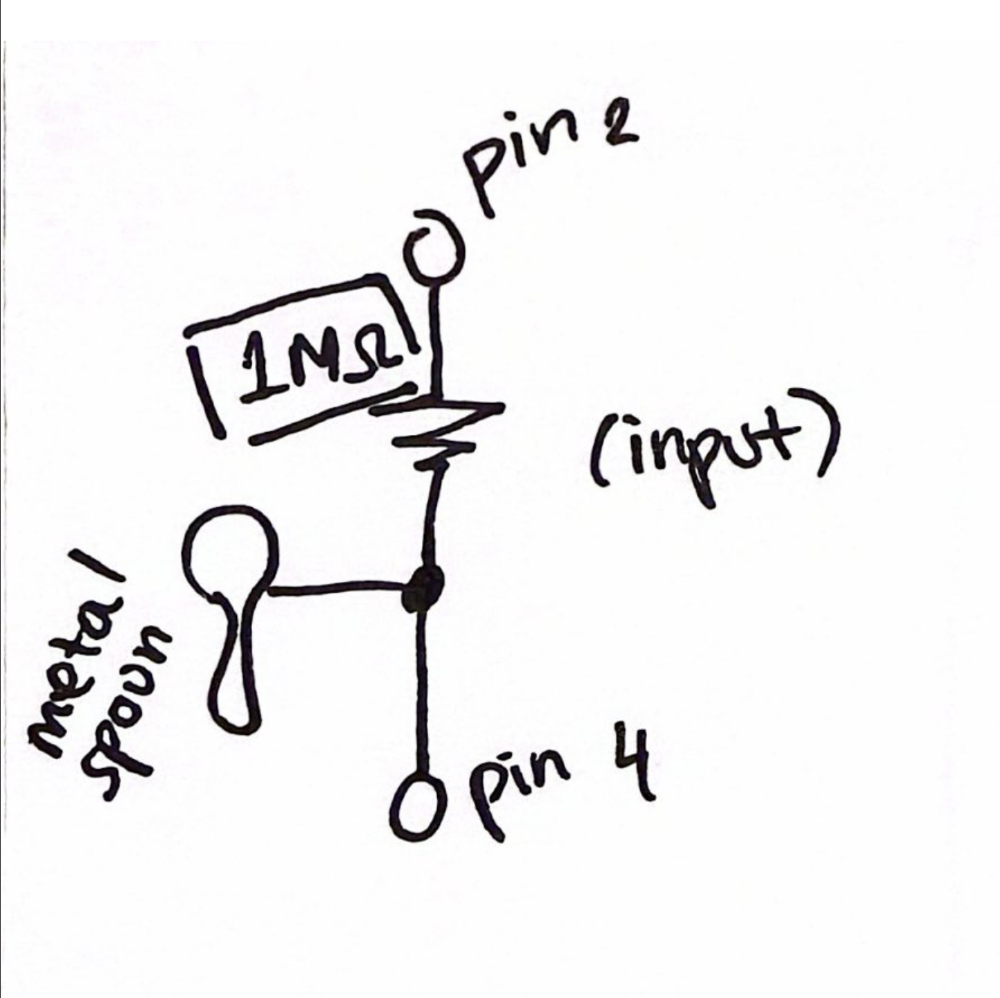
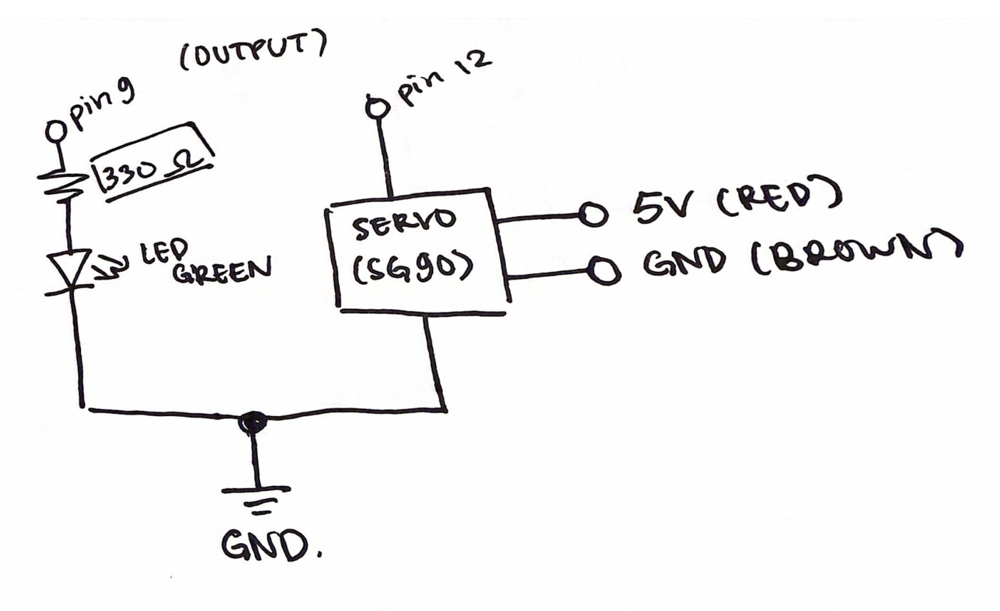

This image shows my Arduino circuit with a breadboard, a green LED, and an SG90 servo motor. The components are connected using jumper wires and resistors, with the Arduino supplying power and controlling the circuit.


This GIF shows when I touch the metal spoon, the capacitive sensor detects the change and activates the servo motor, rotating it to 90° while turning on the green LED. When I release the spoon, the servo returns to 0° and the LED turns off.
// Include the servo motor library.
#include
// Include the capacitive sensor library.
#include
// Create a servo object.
Servo myServo;
// Set up the capacitive sensor using pins 2 and 4.
CapacitiveSensor touchSensor = CapacitiveSensor(2, 4);
// Set the servo pin to 12.
int servoPin = 12;
// Set the LED pin to 9.
int ledPin = 9;
// Set the touch threshold.
long threshold = 100;
// Run this function once.
void setup() {
// Start serial communication.
Serial.begin(9600);
// Set the LED as an output.
pinMode(ledPin, OUTPUT);
// Attach the servo to pin 12.
myServo.attach(servoPin);
}
// Repeat this function continuously.
void loop() {
// Read the capacitive touch sensor.
long sensorValue = touchSensor.capacitiveSensor(30);
// Print the sensor value.
Serial.println(sensorValue);
// Check whether the spoon is touched.
if (sensorValue > threshold) {
// Move the servo to 90 degrees.
myServo.write(90);
// Turn the LED on.
digitalWrite(ledPin, HIGH);
}
// Run this when the spoon is not touched.
else {
// Move the servo back to 0 degrees.
myServo.write(0);
// Turn the LED off.
digitalWrite(ledPin, LOW);
}
// Wait 50 milliseconds before reading again.
delay(50);
}
This image shows my Arduino circuit with a breadboard, a green LED, and an SG90 servo motor. The components are connected using jumper wires and resistors, with the Arduino supplying power and controlling the circuit.

This schematic shows my capacitive touch sensor, which uses a metal spoon as the input. I connected a 1 MΩ resistor between Arduino pins 2 and 4, with pin 2 acting as the send pin and pin 4 as the receive pin. The metal spoon is also connected to pin 4 and acts as the touch-sensitive surface. When I touch the spoon, my body changes the capacitance, which affects how quickly the signal travels between the two pins. The Arduino detects this change using the CapacitiveSensor library. I chose a 1 MΩ resistor because it provides enough sensitivity to detect direct touch without making the sensor overly sensitive. This allows the spoon to control the servo motor and LED when touched.

This schematic shows the output components of my circuit, which include a green LED and an SG90 servo motor. The green LED is connected to pin 9 through a 330 Ω resistor, which limits the current flowing through the LED and prevents it from being damaged. The servo motor is connected to pin 12 for its control signal, while its red wire connects to 5V and its brown wire connects to GND. The LED and servo share a common ground connection. When the metal spoon detects touch, the Arduino sends a signal to rotate the servo motor to 90° and turns on the green LED. When the spoon is not being touched, the servo returns to 0° and the LED turns off.

I used a 330 Ω resistor for the green LED to limit the amount of current flowing through it and prevent it from being damaged. Assuming the green LED has a forward voltage of 2.2 V and the Arduino supplies 5 V, I calculated the current using Ohm's Law. This is below the recommended 20 mA operating current for an Arduino pin, so the 330 Ω resistor allows the LED to light up without drawing too much current. The LED turns on when the metal spoon detects touch. For the capacitive touch sensor, I used a 1 MΩ resistor between pins 2 and 4. The metal spoon is connected to pin 4 and acts as the touch-sensitive surface. The resistor helps the Arduino detect changes in capacitance when I touch the spoon. I chose 1 MΩ because it provides enough sensitivity to detect direct touch without making the sensor overly sensitive. Using a larger resistor could increase the sensitivity, but it could also make the sensor respond more slowly. Since I only want the sensor to detect when someone touches the spoon, 1 MΩ is a suitable choice for my circuit.
The graph shows how the voltage at pin 9 changes over time as the servo moves from 0° to 180°. The servo receives pulses that switch between 0 V and 5 V approximately every 20 milliseconds. At 0°, the HIGH pulse lasts about 1 ms, and as the servo rotates toward 180°, the pulse gradually increases to about 2 ms. The delay(100) in the code means that the servo's position is updated by 1° every 100 milliseconds. Since the loop goes from 0° to 180°, the whole sequence takes approximately 18.1 seconds. After reaching 180°, the loop starts over at 0°, and the pulse width returns to approximately 1 ms.
I would use a median filter because it helps remove occasional incorrect readings that are much higher or lower than the actual value.
reading1 = readSensor()
reading2 = readSensor()
reading3 = readSensor()
sensorValue = median(reading1, reading2, reading3)
I would use a moving average to smooth out the sensor readings because the measurements randomly fluctuate above or below the actual value.
total = 0
Repeat 10 times:
reading = readSensor()
total = total + reading
sensorValue = total / 10